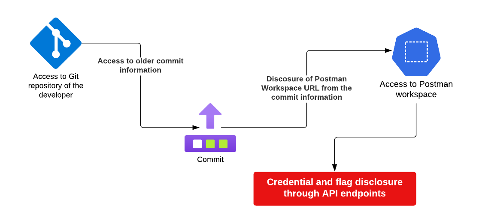
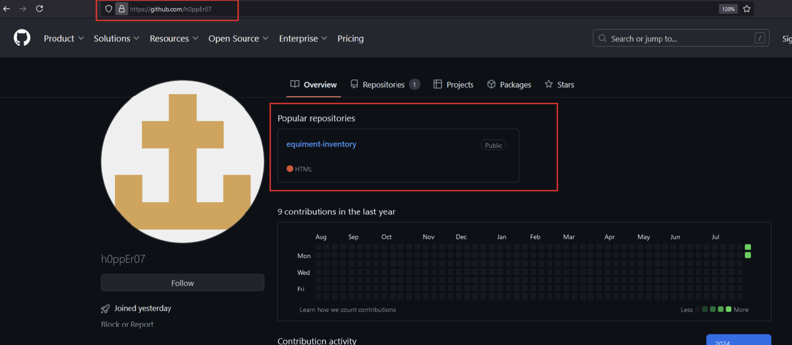
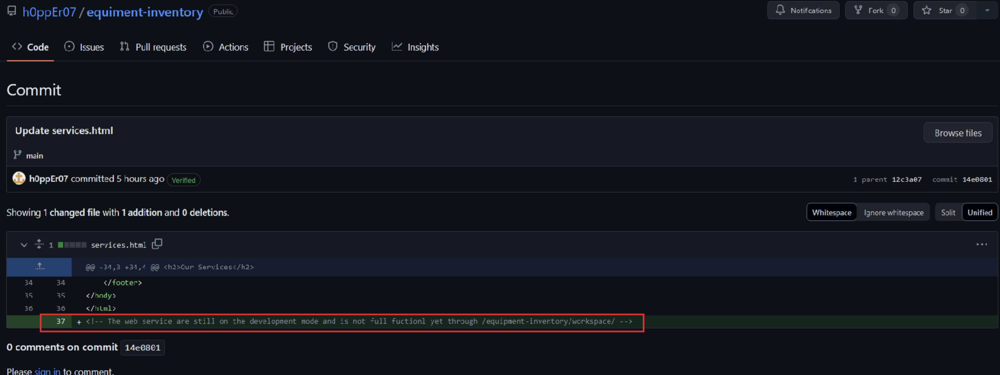
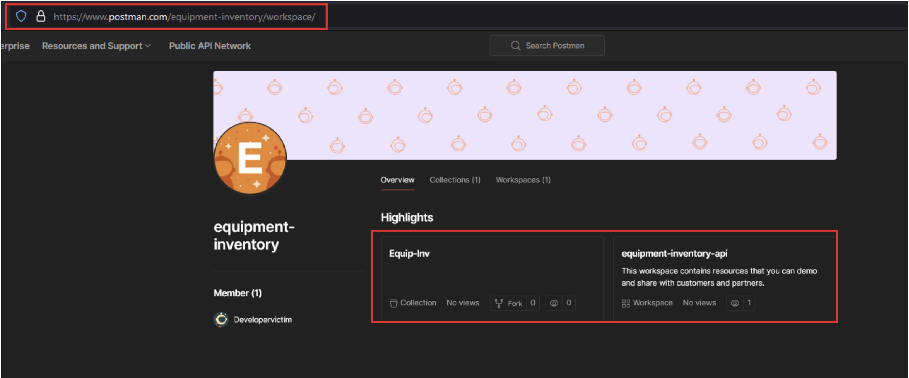
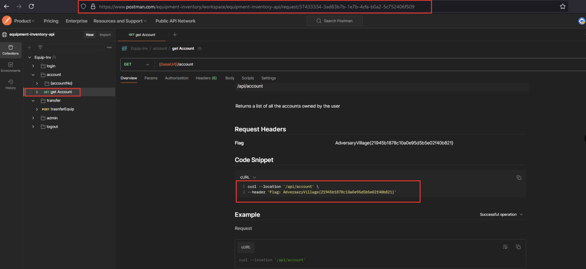

Flag: AdversaryVillage{21945b1878c10a0e95d5b5e02f40b821}
Description:
Meet h0ppEr07, a developer at Adversary City Hospital known for their exceptional coding
skills. However, even the best make mistakes, and h0ppEr07 is no exception, often falling prey to human
errors. Your challenge is to scrutinize h0ppEr07's code, uncover the slip-up, and claim your flag. Can you
spot the mistake and crack the code? The reputation of Adversary City Hospital's cybersecurity rests on
your sharp eye!
Walkthrough:

- Identify the h0ppEr07’s public GitHub repository using open source intelligence gathering techniques.

- Navigate through the recent commits which were made within the GitHub repository “equipment-inventory”.

- There is a comment that was deleted through one of the Git commits by the repository owner.
- The comment that was removed by the user is a portion of a Postman public workspace URL.
- Navigate to the Postman public workspace URL by adding the root domain to the workspace details disclosed: https://www.postman.com/equipment-inventory/workspace/

- There is an existing API collection within the Postman URL discovered. Analyze the details of the API endpoints.
- Navigate to the API endpoint to fetch the account details and observe the HTTP request headers configured.
- The final flag will be in the HTTP headers section of the API endpoint.
